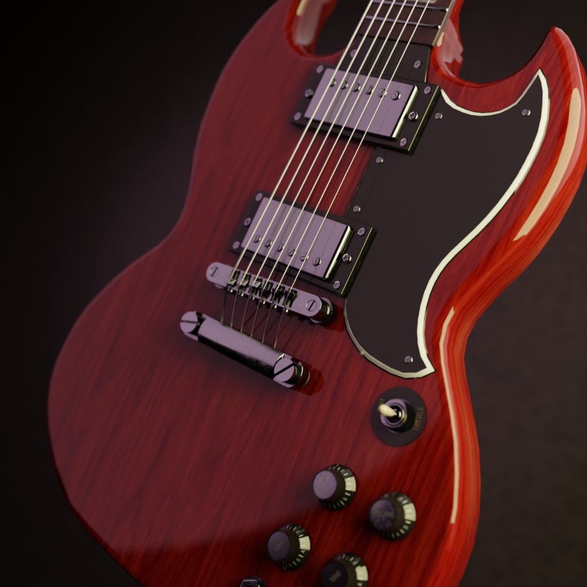
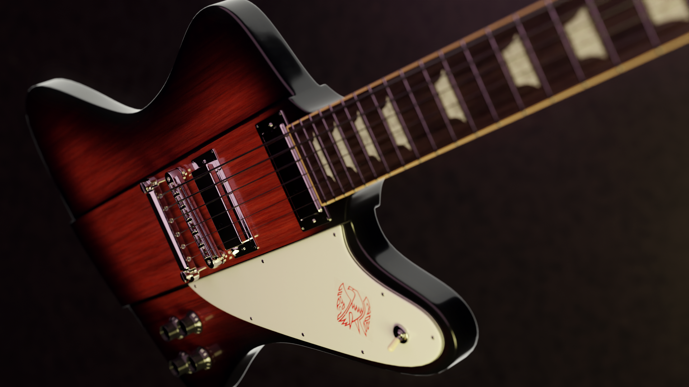
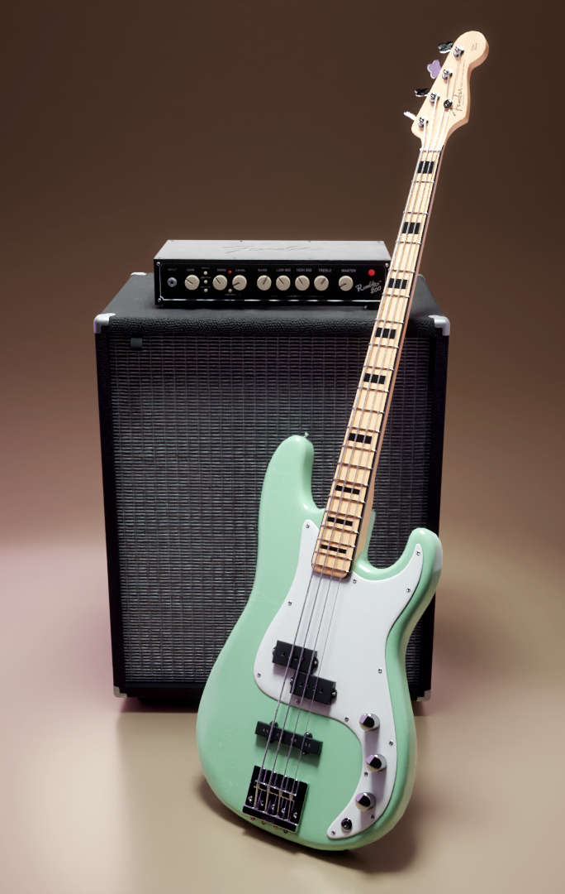
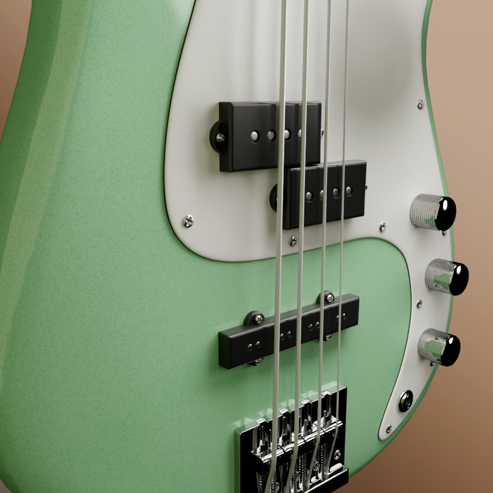
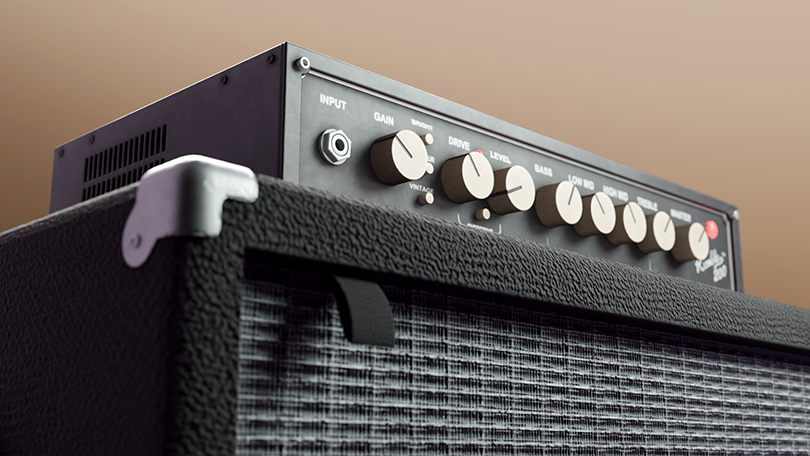
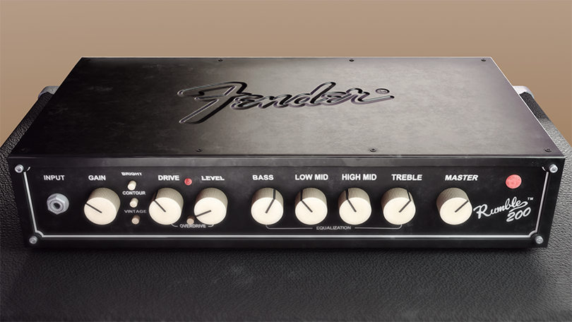
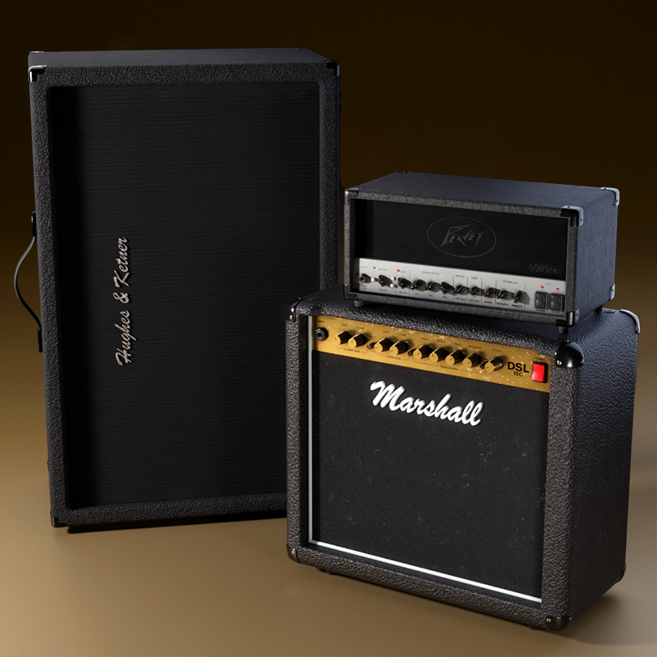
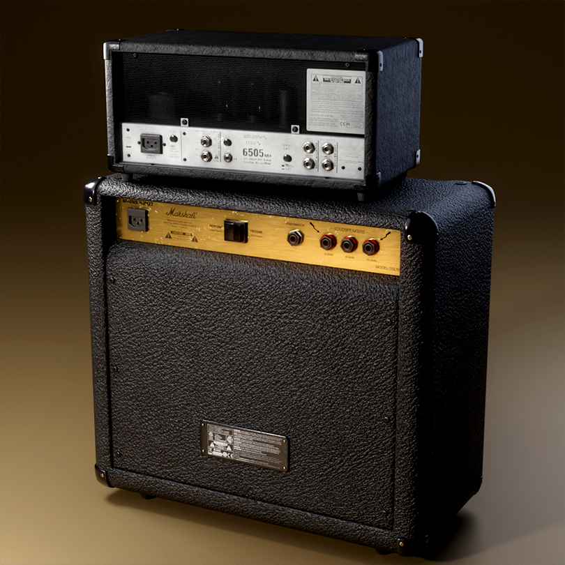
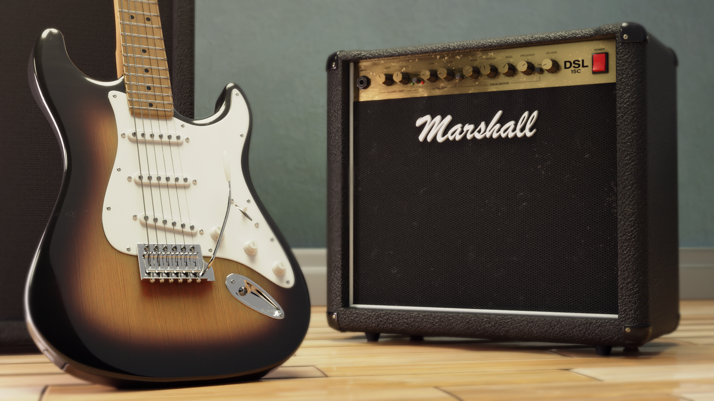
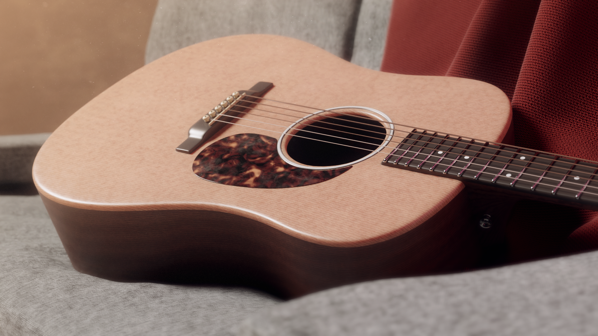

High-Poly 3D Instruments
High-poly 3D instrument models created with detailed hard-surface workflows in Blender. Textures were developed using Blender, Substance Painter, and Substance Sampler, with final compositing and presentation completed in Photoshop and Premiere Pro. The collection includes guitars, basses, amplifiers, and accessories, each built with an emphasis on realistic materials, precise modeling, and clean visual presentation.














